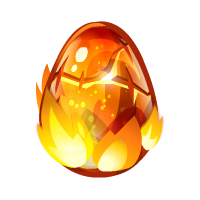
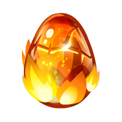
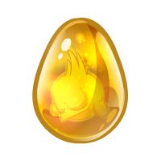
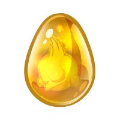
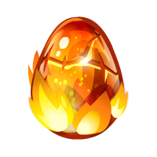
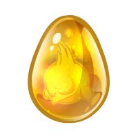
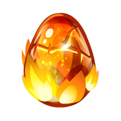
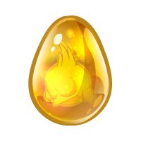
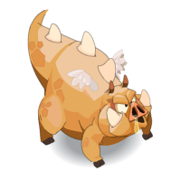
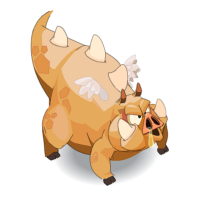

Six sur Six
Accueil
Opti Quêtes
Schéma Quêtes
Maps et chemins
Donjons & Co
Divers
Incarnam
Astrub
Mais où sont les Dofus ?
Ocre d'ambre 1
Ordre I et Alignement 1-27
Vert émeraude 1
Alignement 30-39
Odyssée en trois dimensions (Dofus des Veilleurs)
Vert émeraude 2
Ordre II et Alignement 40-54
Pourpre profond
Ordre III et Alignement 55-60
Bleu turquoise 1
Alignement 61-69
Bleu turquoise 2
Ordre IV et Alignement 71-84
Bleu turquoise 3
Ordre V et Alignement 86-100
Ocre d'ambre 2
Quatre sur Six
Blanc ivoire 1
Nimotopia
Ruines sous-marines
Blanc ivoire 2
Noir d’ébène
Six sur six
 

 


 





 
